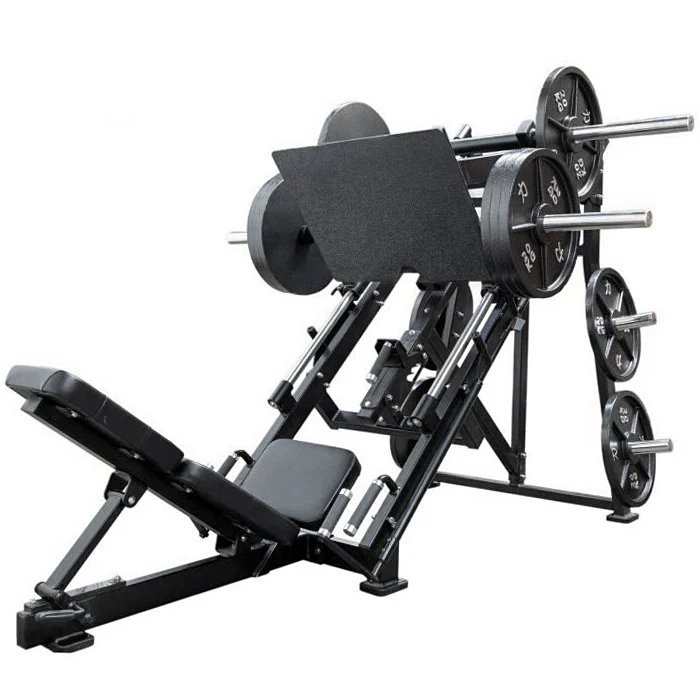

LEG PRESS

Leg press machine adalah alat gym berupa bangku beban dan barbel yang dipasang pada rel miring. Alat ini berfungsi untuk melatih kekuatan otot paha dan betis.
Cara menggunakan leg press machine adalah dengan memosisikan diri setengah berbaring dan kedua kaki di bawah beban. Lalu, buka tuas di bagian bawah mesin secara perlahan. Kemudian mulai dorong beban menggunakan kaki secara bertahap.
Sumber: IDN Times